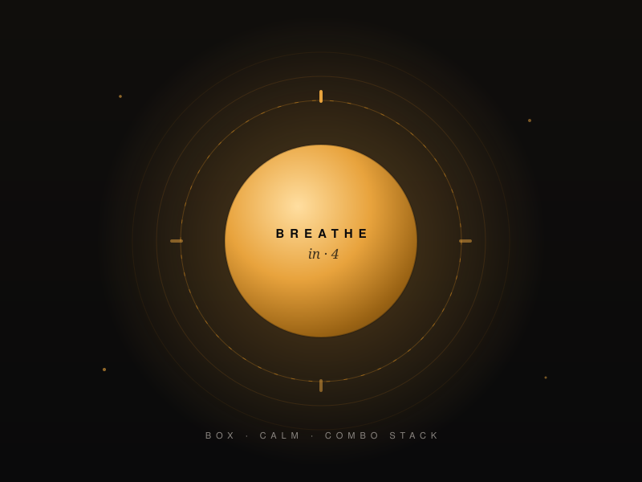
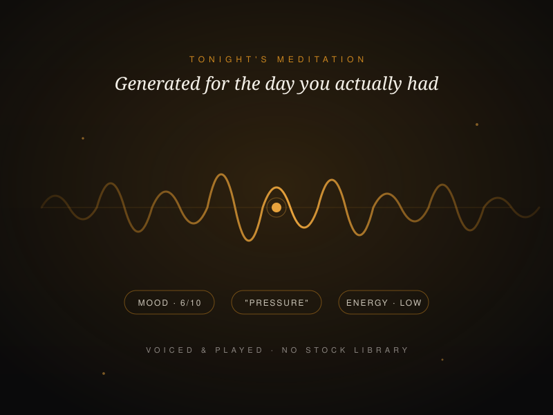

Daily
The Check-In
Eight steps, two minutes. Mood, energy, habits, pressure, and what actually happened. The raw material every other tool is forged from.
Forge · The App
Type your daily check-in. Get coached back from your own words — not a template. Guided breathwork when the day gets heavy, and a meditation generated for the day you actually had. A complete system, no paper required.
Three times this week — and each one after a short night. That isn't temper. That's sleep.
One System
However you write — typed into the app or handwritten in the FORGE Journal — you enter the same reflection system.
Stage One · The Check-In
Mood, energy, habits, pressure, and what actually happened. The daily check-in is the raw material everything else is forged from — and it takes less time than making coffee.
Six core emotions, thirty-five specifics, and room for your own words. Name it before it decides the day for you.
Type straight into the app — or, if you keep the FORGE Journal, scan the handwritten page. Both land in the same place. Neither is required for the other.
No feed. No followers. No performance. Just you and the work, locked to your account.
Stage Two · AI Reflection & Coach
Every other app says the same thing to ten million people. FORGE reads your actual check-in — your mood, your energy, the words you wrote — and answers you like a coach who's been paying attention. You can reply. It remembers. Tomorrow it knows what you said today.
FORGE Reflection · Day 14
"Third time this week you've written 'tired' and skipped the gym after a late finish. The problem isn't the gym. It's what happens at 9pm. Fix the evening and the morning fixes itself."
That's the daily reflection. The Coach goes wider, reading weeks of your history to surface the trend you'd never catch alone. The stress that always spikes on the same day. The habit quietly slipping. The win you keep underrating. The longer you use it, the sharper it gets.
Watch It Work
Daily Check-In
FORGE Reflection
Written from your own words
Shown here from a scanned FORGE Journal page — an entry typed straight into the app lands in exactly the same place.
Stage Three · Breathwork
Guided breathing patterns, structured and built into the app — not a link out to someone else's video. Three paces, hold timers, and a Combo Stack for the full reset when the day has been heavy.
Pick the pattern for the state you're in — pre-pitch nerves, post-conflict heat, or a racing head at midnight.
Chained patterns for a complete reset. Follow the metal, come back level.

Try It Right Here
This is box breathing, one of the patterns inside FORGE. Press begin, follow the metal.
In the app: three paces, hold timers, and the full Combo Stack.

Stage Three · Personalised Meditation
No library of stock tracks recorded for no one in particular. FORGE writes tonight's meditation from your mood, your energy and your own words — then voices it and plays it. If the day was pressure, the meditation knows. If the day was a win, it knows that too.
Whatever you wrote today is the raw material. The session meets you where the day left you.
Not a script to read — a session to close your eyes to. Generated, spoken, done.
The Arsenal
The pipeline is the spine. These are the tools around it — everything that keeps the daily strikes landing.
Daily
Eight steps, two minutes. Mood, energy, habits, pressure, and what actually happened. The raw material every other tool is forged from.
Daily
Six cores, thirty-five specifics, and room for your own words. Name what you're carrying before it decides the day for you.
AI
A daily reflection written from your own check-in, never a template. Reply to it. It remembers what you said.
AI
Reads weeks of your history and surfaces the trend you'd never catch alone. The stress that spikes on the same day. The habit quietly slipping.
Toolkit
Generated for the day you actually had, from your mood, your energy and your words. Then voiced and played. No library of generic tracks.
Toolkit
Guided patterns with three paces, hold timers, and a Combo Stack for the full reset. Regulate in minutes, anywhere.
Toolkit
Guided imagery built around the man you're becoming. See the standard before you go and build it.
Morning
A four-stage guided morning ritual. Focus, intention, resilience, execution — claimed before the world gets a say in your day.
Long game
Streaks, weekly reviews, monthly milestones, the Wheel of Life, and a 90-day reflection. Watch the strikes compound.
Keep scrolling
Apps talk at you. A blank page can’t answer back. FORGE is built so the writing and the coaching are the same conversation.
The FORGE Journal isn’t in this table. It’s the other half of the same philosophy, doing a different job — and it does that job better than any app can.
Inside The App
FORGE is a self-development app for men built around a daily check-in. It writes a personal AI reflection from your own words, includes guided breathwork, generates meditations for the day you actually had, and adds visualisation, a guided morning ritual and long-term pattern coaching.
FORGE is pre-launch. It's in final device testing ahead of App Store review, launching on iOS first. Join early access on the community page and you'll hear the moment it lands.
FORGE will be free to try when it launches on iOS. The full experience will be £7.99 per month; annual pricing will be announced at launch. The physical FORGE Journal is a separate, optional product at £14.99.
No. The app is a complete system on its own — type your check-in directly and everything works. The FORGE Journal is its own complete product too. If you choose to use both, you can scan handwritten pages and get coached from your own handwriting. The bridge is optional. The philosophy isn't.
Yes. FORGE is a private space with no feed, no followers and no social layer. Your entries are locked to your account, protected by row-level security, and never sold.
FORGE launches on iOS first. Android is planned. Join the Built Not Born list and you'll hear when it lands.
The App
FORGE is finishing final device testing before App Store review. Early access members get first word — and first access — the day it clears.
Free to try at launch. Then £7.99/month · annual pricing announced at launch.
Want the ritual of pen on paper instead? Or explore the FORGE Journal →